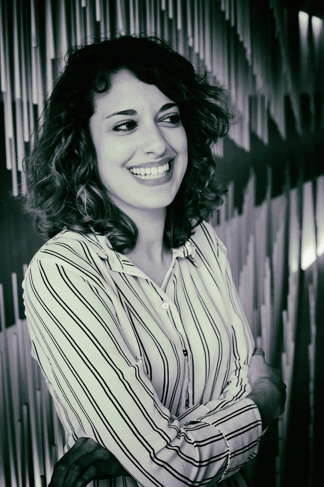

European University Foundation (EUF)
The European University Foundation - Campus Europae, more commonly called European University Foundation (EUF) is a network of 35 member universities established in 21 countries. It stands for diversity and social fairness in Higher Education (HE) and aims to accelerate the modernisation of the European Higher Education Area. The network deploys intensive cooperation and policy experimentation under five key pillars:
- Digital Higher Education both for governance and provision of education,
- entrepreneurship and employability skills of graduates,
- policy innovation at national and European level,
- active citizenship of students and
- quality mobility for all.
The network's key activities are designed to build capacity and expertise among administrative and academic staff members, to raise awareness of EU policy goals and actions and to enable policy dialogues between practitioners, policy-makers and stakeholders. The activities are underpinned by the organisation of high-quality student mobility, since this is considered to be an excellent driver to implement reforms within HE.
To maximise the impact of outcomes the EUF is affiliated with LLL Platform, Groningen Declaration, and cooperates with ESU and ESN. The network is supported by the European Commission grant for Civil Society Cooperation in the field of Education and Training.
The EUF will be in charge of IO1 for the ErasmusX project. For more information, please visit the website: www.uni-foundation.eu
EUF Team

Alba Huertas holds three Master’s Degrees in Sociology, Political Sciences, and European Affairs. Having worked as a Researcher and Project Manager for several years, Ms. Huertas has extensive professional experience in Adult Education, ICT & Higher Education policies and projects at a regional, national, and European/ International level, as well as in delivering trainings for staff. Currently, she is Policy & Project Coordinator at the EUF, where she manages several Erasmus+ funded projects for the development of skills and staff competences. Before joining the EUF, she worked at UNESCO on a wide range of projects related to Mobile Learning and Innovation for Quality in Education, as well as at the SEDEC Commission of the European Committee of the Regions, where she was involved in the elaboration of several EU Directives and Communications, such as the “Digital Education Action Plan”, and the “Strengthening European Identity through Education and Culture”.